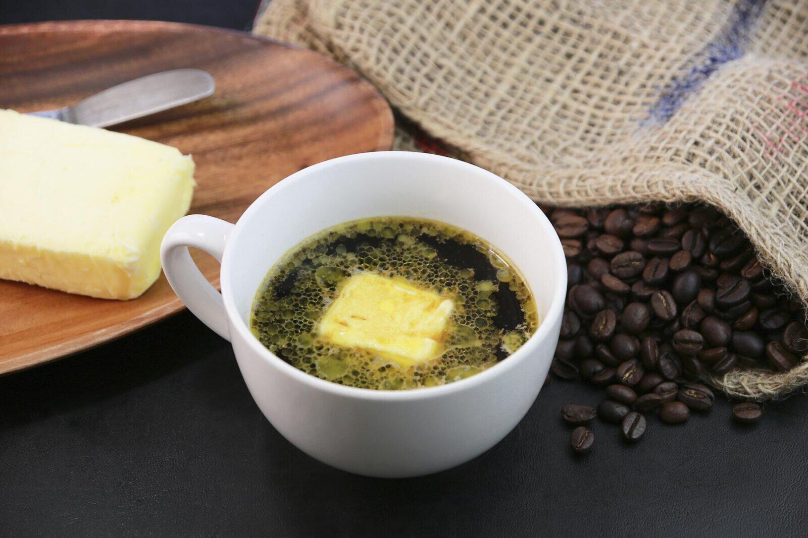

Affogato italian
Dacă îți place cafeaua și înghețata, affogato italian a fost creat pentru tine. Nu este clar cine a venit primul cu ideea de a servi înghețată de vanilie și espresso în aceeași ceașcă, dar băutura a prins la începutul anilor 1900. Pentru a încerca unul acasă, puneți o linguriță mare de înghețată într-o cană înainte de a adăuga o doză de espresso fierbinte. Cheia unui affogato reușit este să turnați espresso-ul peste înghețată chiar înainte de servire și să îl consumați înainte ca înghețata să se topească. Există o dezbatere dacă affogato este o băutură de cafea sau un desert. Poate fi găsit în cafenele și în meniurile de deserturi din toată Italia. Încercați unul și decideți singuri.
Cafea irlandeză
Nu trebuie să fii irlandez pentru a te bucura de combinația clasică de cafea și whisky. Astăzi, cafeaua irlandeză este savurată în întreaga lume de oameni din toate categoriile sociale. Cu toate acestea, a fost creat inițial ca o băutură pentru elita în escalele rapide în Irlanda. În anii 1940, Portul Foynes de lângă Limerick, Irlanda, a fost unul dintre cele mai aglomerate aeroporturi din Europa, deoarece era un punct de referință pentru avioanele care trebuiau să realimenteze. Călătoria cu avionul a fost un lux, iar orașul a deschis un restaurant de lux pentru politicienii și vedetele de la Hollywood care au aterizat acolo. Într-o noapte rece, bucătarul a creat o băutură specială pentru pasagerii obosiți. A fost o lovitură instantanee. O cafea irlandeză clasică se face încălzind o ceașcă, amestecând cafeaua tare și zahărul până când zahărul se dizolvă, adăugând whisky și turnând smântână ușor deasupra. Spune „Do shláinte”, Galic pentru „Pentru sănătatea ta” înainte de a bea.
Cafea Turcească
 Astăzi, cafeaua este de obicei făcută prin prepararea boabelor într-o mașină special concepută. Cu toate acestea, când cafeaua a fost adusă pentru prima dată în Turcia în anii 1500, tehnicile sofisticate de preparare a berii nu existau. În schimb, turcii au fiert boabe de cafea măcinate fin într-un cezve, o oală cu gât lung, de obicei făcută din cupru sau alamă, rezultând o băutură groasă și bogată. Sute de ani mai târziu, cafeaua se face în continuare la fel. Spre deosebire de aproape orice alt tip de cafea, cafeaua turcească nu este filtrată. În schimb, zațul de cafea este preparat în cezve până când se formează o spumă deasupra și apoi turnat direct într-o ceașcă. Zațul de cafea se scufundă treptat în fund în timp ce cafeaua se răcește. Cafeaua turcească poate fi îndulcită prin adăugarea unui cub de zahăr în amestec în timp ce fierbe.
Astăzi, cafeaua este de obicei făcută prin prepararea boabelor într-o mașină special concepută. Cu toate acestea, când cafeaua a fost adusă pentru prima dată în Turcia în anii 1500, tehnicile sofisticate de preparare a berii nu existau. În schimb, turcii au fiert boabe de cafea măcinate fin într-un cezve, o oală cu gât lung, de obicei făcută din cupru sau alamă, rezultând o băutură groasă și bogată. Sute de ani mai târziu, cafeaua se face în continuare la fel. Spre deosebire de aproape orice alt tip de cafea, cafeaua turcească nu este filtrată. În schimb, zațul de cafea este preparat în cezve până când se formează o spumă deasupra și apoi turnat direct într-o ceașcă. Zațul de cafea se scufundă treptat în fund în timp ce cafeaua se răcește. Cafeaua turcească poate fi îndulcită prin adăugarea unui cub de zahăr în amestec în timp ce fierbe.
Cafeua grecească
Cultura cafelei grecești este adânc înrădăcinată în tradiție și are o mare semnificație culturală. Grecii se adună adesea în cafenelele tradiționale numite „kafeneia” pentru a socializa, a se relaxa și a savura cafeaua. Cafeaua grecească, cunoscută și sub numele de „Ellinikos kafés”, este o băutură puternică și groasă, făcută din boabe de cafea măcinate fin. Este de obicei preparată într-o oală mică de cupru sau alamă numită „briki” și servită în căni mici însoțite de un pahar cu apă. Cafeaua este adesea savurata incet, incurajand conversatiile si conexiunile intre prieteni sau colegi. Cultura grecească a cafelei este un simbol al ospitalității și o parte importantă a vieții de zi cu zi, reflectând dragostea grecilor pentru socializare și savurare a momentului.
Cafea vietnameză cu ou (Cà phê trứng)
Ouăle și cafeaua ar putea să nu pară cea mai bună combinație, dar se amestecă perfect în această cafea clasică din Vietnam. Unii susțin că cafeaua cu ou s-a născut când o penurie de lapte proaspăt a lovit Vietnamul la mijlocul secolului al XX-lea. Un barista întreprinzător a decis să înlocuiască ouăle bătute. Deși o combinație puțin probabilă, a funcționat. Creația a devenit extrem de populară și poate fi găsită astăzi în Vietnam. A face unul acasă este ușor. Bateți un jugul de ou cu lapte condensat îndulcit și turnați-l deasupra unui espresso tare.
Cafea Rusă Raf
Când un obișnuit al unei cafenele din Moscova pe nume Rafael Timberbaev și-a dorit o cafea pe bază de lapte care să nu fie cappuccino, barista a devenit creativ. Au amestecat un shot de espresso, smântână groasă și zahăr vanilat înainte de a aburi amestecul. Băutura a fost atât de populară încât cafeneaua a adăugat-o în meniul său și a numit-o după clientul care a inspirat ideea. Cafeaua Raf s-a răspândit curând în toată Rusia și nu numai. Preparați espresso pentru a face un Raf acasă, apoi adăugați smântână groasă și zahăr vanilat. Apoi, aburiți amestecul cu o baghetă pentru abur. Dacă nu aveți o baghetă pentru abur, încălziți smântâna pe aragaz înainte de a o amesteca cu cafeaua și zahărul și folosiți o presă franțuzească pentru a plonja amestecul în mod repetat până își dublează volumul. Odată ce ați stăpânit versiunea clasică, experimentați cu diferite zaharuri și condimente aromate.
Kopi Gu Yu din Singapore
 Legenda spune că kopi gu yu are origini chineze, deoarece a fost servit pentru prima dată în cafenelele Hainanese din Singapore în anii 1930. Caracteristica distinctivă a acestei băuturi este placa de unt așezată deasupra unei cafele bogate, gândite, făcută cu lapte condensat. Untul conferă cafelei o aromă caramelizată și îi înmoaie notele dure. Unii cred că grăsimea din unt a ajutat să le ofere muncitorilor un plus de energie, în timp ce alții cred că a ajutat la calmarea gâtului fumătorilor de opiu care frecventau cafenelele în care se servea kopi gu yu. Astăzi, unele cafenele prăjesc fasole în unt pentru a produce o aromă similară, dar tradiționalul kopi gu yu mai poate fi găsit în Singapore. Pentru a face kopi gu yu acasă, preparați o ceașcă de cafea tare, adăugați lapte condensat și acoperiți cu o bucată de unt.
Hong Kong Yuanyang
Există diferite versiuni ale poveștii despre cum a apărut yuanang, o combinație bogată de cafea și ceai. O explicație probabilă este că atunci când britanicii au condus Hong Kong-ul, tradiția lor de a bea ceai a prins cu o întorsătură. Yuanang este un amestec de cafea, ceai negru, zahăr și lapte. Sună simplu, dar băutura are o aromă bogată și complexă. Pentru a face o versiune ușoară de yuanang acasă, combinați cafeaua preparată și ceaiul negru într-o cană, apoi adăugați zahăr și jumătate și jumătate. O versiune mai sofisticată și consumatoare de timp folosește ceai cu lapte în loc de ceai negru. Indiferent cum o faci, yuanang este o opțiune excelentă pentru cei care sunt indeciși, dar au nevoie de o doză de cofeină.
Cafeneaua Senegaleză Touba
Cafe Touba poartă numele orașului senegalez, unde a fost introdus pentru prima dată ca parte a practicii religioase sufite. Se spune că liderul Frăției Mouride a adus băutura înapoi cu el după ce a fost exilat în Gabon, ca pedeapsă pentru rezistența pașnică la colonialismul francez. Se crede că băutura are proprietăți medicinale și că îi ține treji pe cei care o beau toată noaptea. Astăzi, băutura poate fi găsită în tot Senegalul. Ceea ce deosebește cafeneaua Tobua de alte băuturi de cafea este că nu este doar picant, ci și picant datorită adaosului de ardei Selim sau de Guineea, cunoscut și sub numele de djar. Pentru o versiune ușoară acasă, puneți cafea tare împreună cu djar măcinat și cuișoare într-un aparat de cafea și preparați ca de obicei. Adăugați zahăr după gust și bucurați-vă. Unii înlocuiesc piper negru dacă nu găsesc djar sau adaugă cardamom.
Algerianul Mazagran
Se crede că Mazagran își are originea în orașul de coastă Mostaganem din nord-vestul Algeriei, unde un fort poartă același nume cu populara băutură de cafea. Începând cu anii 1840, Algeria a fost ocupată de trupele franceze care amestecau apă rece cu cafea tare algeriană pentru a se răcori și a rămâne treaz pentru ceasurile lor de noapte. Aceste trupe au adus rețeta înapoi în Europa cu ei, unde s-a răspândit pe continent și a evoluat pentru a include variații regionale cu suc de lămâie, zahăr din trestie, mentă și alcool. Astăzi, o variantă de mazagran făcută cu lămâie este deosebit de populară în Portugalia, cunoscută și sub numele de cafea cu gheață portugheză sau limonadă de cafea. Este ușor de făcut. Doar amestecați cafeaua cu gheață, suc de lămâie și zahăr după gust. Adăugați rom pentru o versiune cu țepi sau apă cu sodă pentru un răsfăț de vară cu spumă.
Cafe Cubano
Prima plantă de cafea a fost adusă în Cuba la mijlocul anilor 1700. Cu toate acestea, cultivarea cafelei de pe insulă nu a decolat decât zeci de ani mai târziu, când un aflux de sclavi francezi eliberați și-au folosit abilitățile agricole pentru a îmbunătăți recolta. Cuba produce și o cantitate mare de zahăr, așa că în mod natural, cubanezii le-au combinat pe cele două pentru a crea o băutură unică. Cafe Cubano este o băutură puternică și dulce, de obicei, făcută cu o bere Moka pe plită. Cu toate acestea, se poate face cu orice espresso. Cheia pentru a face cafeneaua Cubano acasă este să biciuiți zahărul demerara cu primele picături de espresso proaspăt preparat până când formează o spumă. Apoi adăugați restul de espresso. Băutura rezultată are o textură netedă, catifelată. Cafe Cubano este servită într-o ceașcă mică, probabil că se întoarce la vremea când cafeaua și alte alimente erau raționale în Cuba.
Café mexican de Olla
În timpul revoluției mexicane, femeile preparau cafea în vase de lut cu condimente pentru a da energie soldaților. Cafeaua a ajuns să fie cunoscută ca cafe de olla sau „cafea la oală”. Pentru a face cafe de olla acasă, nu ai nevoie de o oală de lut. Se fierbe scorțișoară, zahăr brun, cuișoare și anason stelat pentru o versiune simplificată până când zahărul brun se dizolvă. Apoi, adăugați siropul la cafeaua fierbinte sau cu gheață proaspăt preparată. Unora le place să-și facă cafe de olla „piquete” adăugând o doză de coniac, rom sau Kahlua.